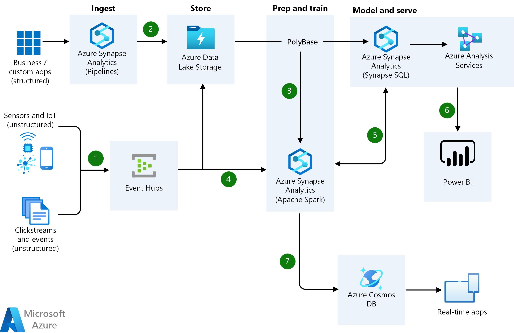

Business required real-time analytics on streaming data.

Used Event Hub for ingestion and Databricks Structured Streaming for processing real-time data.
Enabled near real-time insights and reduced latency significantly.